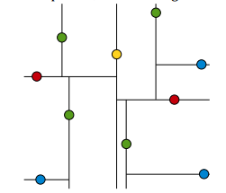
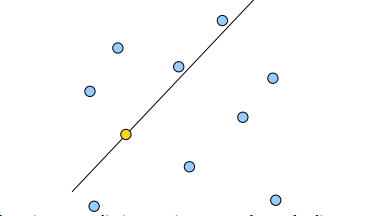
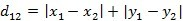
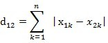
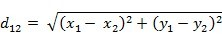
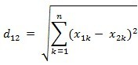
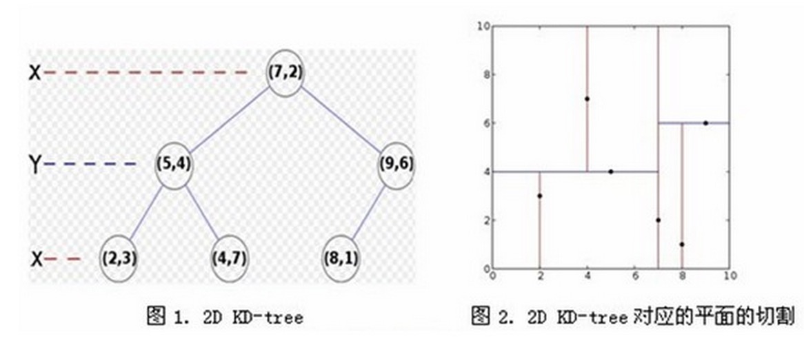

K-dimension tree
K-d Tree是一种树结构索引方式，其基本思想是对搜索空间（高维空间）进行层次划分，K-d tree是一种平衡二叉树（BST）。
根据划分的空间是否有混叠可以分为Clipping和Overlapping两种：
- K-d tree 划分空间没有重叠
- R Tree 划分空间相互有交叠
维度（dimension）
k-d树是一种空间（维度）划分，将空间划分为特定的几个部分，然后在特定空间的部分内进行相关搜索
二维平面划分


距离函数定义
曼哈顿距离（Manhattan distance）
二维平面两点a(x1,y1)与b(x2,y2)间的曼哈顿距离

两个n维向量a(x11,x12,…,x1n)与 b(x21,x22,…,x2n)间的曼哈顿距离

欧氏距离（Euclidean Distance）
二维平面上两点a(x1,y1)与b(x2,y2)间的欧氏距离

三维空间两点a(x1,y1,z1)与b(x2,y2,z2)间的欧氏距离

构建K-d tree（build tree）
new Dalaba.KDTree([2, 3, 4, 9, 7, 1, 5])
构建K-d tree（build tree）2维
new Dalaba.KDTree([{x: 2, y: 3}, {x: 5, y: 4}, {x: 9, y: 6}, {x: 4, y: 7}, {x: 8, y: 1}, {x: 7, y: 2}], ["x", "y"])

Web PPT
为了更接近直观，本PPT带有js交互，可点此链接https://flyend.github.io/ppts/kdtree.html 预览，支持手机浏览，当然。。。